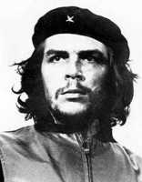

Ernesto Che Guevara - Diccionario Biográfico - La web de emijrp
{kind=link}
Ernesto Che Guevara (Rosario, Argentina, 14 de mayo de 1928 - La Higuera, Bolivia, 9 de octubre de 1967). Revolucionario, médico y periodista argentino-cubano.
Fue uno de los ideólogos y comandantes de la Revolución Cubana. Participó en la organización del Estado Socialista Cubano hasta 1965. Desempeñó varios altos cargos de su administración y gobierno, principalmente en asuntos económicos, siendo presidente del Banco Nacional y Ministro de Industria. En el área diplomática, actuó como responsable de varias misiones internacionales.
Partidario de extender la lucha armada en el Tercer Mundo, Guevara impulsó la creación de focos guerrilleros en varios países de América Latina. Entre 1965 y 1967 combatió en el Congo y en Bolivia.
Fue capturado por el Ejército Boliviano con ayuda de la CIA y asesinado el 9 de octubre de 1967.
Entre sus obras destacan:
- Diccionario filosófico (1946-1957), publicadas parcialmente
- Índice literario (1946-1957), inédito
- Diarios de motocicleta
- La guerra de guerrillas
- El año en que estuvimos en ninguna parte
- Diario del Che en Bolivia
Son varias las películas basadas en la vida del Che. En 2004, Walter Salles filmó Diarios de motocicleta y en 2008 Steven Soderbergh dirigió un biopic en dos partes Che: el argentino y Che: guerrilla.
 |
Esta página fue modificada por última vez el 2016-09-20 18:26:04 (UTC) | GitHub pages |